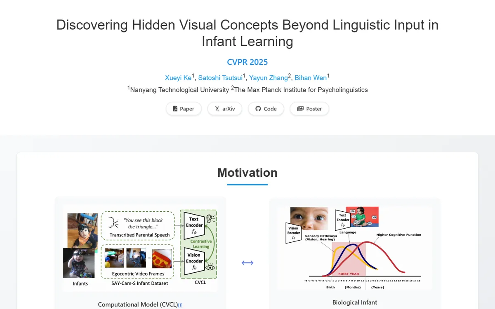

Discovering Hidden Visual Concepts Beyond Linguistic Input in Infant Learning
A tidy explainer deck: soft white cards, a blue question bubble, three numbered coloured tabs.

Checked against the rendered page. Listed URL redirects to https://kexueyi.github.io/discover-hidden-visual-concepts/ (measured there). Google Sans is not loaded so title and section titles fall back to Arial; system-ui precedes Inter so Inter never renders.
Why it is here
Modern card UI: soft-shadow panels, a highlighted research-question callout and numbered colour-coded contribution cards. A useful pattern for a story-driven page.
Overview
Color Palette
Typography
system-ui
Discovering Hidden Visual Concepts Beyond Linguistic Input in Infant L
Abstract · Method · Results · BibTeX — 0123456789
Arial
Discovering Hidden Visual Concepts Beyond Linguistic Input in Infant L
Abstract · Method · Results · BibTeX — 0123456789
Roboto Mono
Discovering Hidden Visual Concepts Beyond Linguistic Input in Infant L
Abstract · Method · Results · BibTeX — 0123456789
Spacing & Shape
Page Modules
Guidelines
More like this

Scaling Text-Rich Image Understanding via Code-Guided Synthetic Multimodal Data Generation
A university press catalogue: small-caps serif title, a colour wheel of specimens and an earthy bar chart.

DICE-BENCH: Evaluating the Tool-Use Capabilities of Large Language Models in Multi-Round, Multi-Party Dialogues
A Nerfies page with a game-box cover: a charcoal dice banner stamps the identity, then pastel brand-tinted pills and a grey carousel strip carry you into a quiet two-column method read.

TUNA: Comprehensive Fine-grained Temporal Understanding Evaluation on Dense Dynamic Videos
A benchmark that leads with its scoreboard: a fish-logo small-caps wordmark, a gradient venue line, then a full-width grey-headed leaderboard with zebra rows and blue model links.

Archon: A Unified Multimodal Model for Holistic Digital Human Generation
A midnight observatory: an opalescent logotype, teal signal lights and numbered mission cards glowing on deep space.

Pano3DComposer: Feed-Forward Compositional 3D Scene Generation from Single Panoramic Image
A tidy lab notebook with blue margin tabs, opened on a split panorama you can drag apart.

UniPixie: Unified and Probabilistic 3D Physics Learning via Flow Matching
A product launch page for a physics engine: frosted pill nav, heavy sans headlines and a sky-to-red gradient running through every accent.